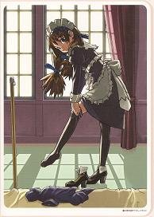

EDITOR'S NOTE:
I hereby renounce humanity.
A Maid Clothes and Machine Gun art-book? Is this for real?
'Get outta town!' I hear you cry (I'm assuming all my readers are Marty McFly).
This is A Thing, and It Exists.
So here's how it was. During my research for the guide for this game I happened upon this Japanese discussion board post (which seems to be re-posted from here) and, among many other useful things (mostly proving that many of my assumptions about the game were totally right, which was nice) the post made mention of a book for the game, published by Koei. This was... Confusing. I understand that there's art books for every pretty much any game out there (including Bioshock, Fighting Vipers and even Cannon Dancer) but of all things, an art book for this? Aside from maid fetishists (or big Mahoromatic fans) why would anyone need this? And then, of course, my morbid curiosity started acting up again, which is basically to blame for, well, this entire website). I had to know what they could've possibly put in this thing. Had to. Fortunately, books like this are totally out of my reach, so I'd never know, right?
It's a shame, then, that the blog post had the ISBN number for it (ISBN4-7758-0510-X, for the curious) because five minutes later I found the book for sale. This isn't the only one, mind you, as Koei has published three books pertaining to the Simple 2000 series- as well as this one, they released two 'compilation' books collecting art from unconnected Simple 2000 games 1. Information was far more scant on the Global Defence Force/Chikyu Boueigun 2 book, published by someone else [There's a book for GDF too? Well, OK, humanity's back in my good books. But it's on notice. - Ed] but of all these, the only one being sold by a place willing to ship to my darkened corner of the Earth (England) was, of course, this one. Oh, no Global Defence Force love for muggins Cooke. So, reader, I bought it (hey, it was only a tenner, I guess no-one else wanted it) because if nothing else I am dedicated to my art, my craft if you will, of documenting weird vid-cons in as much depth as possible. It was a good thing, too- soon after it arrived, the shop I ordered it from closed down and I've never been able to find another copy, which proves I have a mystical Touch of Death that kills any entities I associate with (see also: the collapse of Live Publishing happened two weeks after my work experience placement).
Enough rambling, then. What is this thing?
It's actually a robust guide to pretty much anything and everything to do with this curious game. Admittedly, I can't read Japanese so the majority of it is lost on me (in particular, I'd love to see the staff interview translated, just to see if the game's origins are what I think they are, something along the lines of 'well, I had this drunken bet, and I lost, so...') but I am adept at reading pictures and getting the basic gist of things in languages I don't understand, so it's still a nice source of info. The book is divided into three chapters, and what follows are a few photographs of what these chapters contain. Sadly, the book is incredibly difficult to scan without completely wrecking the blessed thing, so for the most part, we'll be seeing this book in wondrous Phot-O-Time, and it's a half-decent camera this time, too! However, there's a few scans at the bottom, for those who really want them.
Chapter 1 - Character and ColorGraphic is first, and this is probably the section you'll get the most out of if you're like me and only speak/read English and French. It covers all the characters in the game, devoting a few pages to Yuki, Laura and Masaki (including scrapped designs for Yuki's extra costumes) then gives a brief glance at the other enemies and vehicles (including an unused vacuum machine weapon for Yuki?!) before moving on to the stage designs and more on Yuki's costumes. While the unused/alternate designs are interesting, what really shocked me here were the concept sketches for the stages- the city stage in particular looks vibrant and colourful here. It's a shame they somehow couldn't follow it up in the game itself, as the environments are probably the worst part of the graphics.
It caps things off with an illustration gallery, which shows off some neat full-page artwork (shown above) and a special 'Guest Illustration Gallery' showing off four pieces of fan art! Yes, fan art! For this game! I certainly didn't know it existed, did you? Then again, fan art of the Sorceress from Dragon's Crown appeared five seconds after the game was announced, so this kind of thing has a quick turnaround.
Chapter 2 - GameStage Guide comes next, and this is as thorough as you can get when comes to a game guide. It makes my pathetic little effort look like absolute shit. The basics are covered in the first two pages, then each stage in the game is detailed meticulously, with full maps (why you'd need maps in a game like this is beyond me), precise enemy numbers given for each encounter, bosses detailed... Everything. It's way over-the-top for a game as simple as this, but at least it's thorough, I guess? The guide also covers the EX Game stages (the maps aren't as big, but the detail remains), info on every enemy in the game (even those in the sniper/car chase stages) and a complete listing of Yuki's weapons and costumes.
(It's amusing to note that even though this isn't a video game and their involvement was almost certainly minimal, the D3 Publisher mark of cheapness is still present here- once the guide starts talking about the EX Game stages, the remainder of the book is published in black and white.)
(Note: previous comment was written before I became aware that a lot of Japanese guide books are like this. Feel free to point and laugh.)
Chapter 3 - Material Collection is simultaneously the most interesting and inaccessible part of the book- half of it consists of production sketches, showing early designs for the characters, and the other half is interviews (with the staff and the game characters?) and a few gag comics (provided by different fan artists, which makes for a total of six fan artists for this game) which you can mostly get the gist of. However, I found a blog post (presented here in Google-Translate-O-Vision) which gives a basic summary of the staff interview. I think. All I can really get from this is that the producer of the game was also involved in Simple 2000 series stablemate Hard Knocks High, the research for the game involved visiting a maid café (if that is true then that is awesome) and, critically, they were willing to make a sequel if the first game sold well. The rest is, unfortunately, nonsense (the joys of machine translation) but man, they were seriously gunning for a sequel?
So, that's The Maid Clothes and Machine Gun - Complete Works, then. It's weird just how detailed it is- not a stone has been left unturned, and that's even when I can't read half of it. This is simultaneously surprising (in a 'why would anyone do that with this game' kind of way) and not surprising at all (in the sense that if Ant Cooke, Shmuck of the Internet can write a guide for this thing, anyone can). However, what really struck me was the amount of hard graft that goes into making any video game these days. Easy to forget, isn't it? When you look at art books or in-depth developer interviews for what I guess you'd call 'blockbuster' games, you don't need to be told that a lot of hard work went into them- that's obvious, it's not necessary to repeat it. However, it's easy to forget that even little games like The Maid Clothes and Machine Gun, judging from the art present in this book, require a lot of work and toil to get done, which is pretty crazy when you remember it's just an average 3D action game, doomed to obscurity on a budget label. It's weird!
In any case, this book is a pretty interesting glimpse into the work that goes into a run-of-the-mill game that also happens to have maids in it. Even if you can't read it, there's lots of art that you literally cannot find anywhere else (except this site, of course, hohohohoho). If you actually want to own this after all these photos and scans, then oh my god what is wrong with you, don't be like me i'm a loser whack that ISBN number into Google and get searching. You might get lucky! Or you might find the Global Defence Force book, in which case I hate you I hate you I hate you.
And yes, we are aware of the pointlessness of buying a book in a language we can't read.
Still, we reckon it's at least a rung above playing RPGs untranslated and pretending to understand them HA HA NEVER MIND
Since the photos we've got up above simply aren't enough, here's some more for you.
Click to embiggen.

And as if you haven't been spoiled enough today, here's some high-quality scans.
First, the cover/back of the book- this is a dust-cover which can be removed to reveal a monochrome version underneath:
Next, the full-page picture in the official illustration section:

Finally, the four Guest Illustrations in the order they appear:
Sadly, like every scan I've ever attempted since the beginning of time, these aren't great. They'll have to do, as I'm not ordering another bloody copy!
This will be the final article about The Maid Clothes and Machine Gun on this site.
We need to put this dog to bed, man.
... Well, unless we ever find this thing:
!!!
EDITOR'S NOTE:
Whoops, there goes that whole 'faith in humanity' thing again! This is the worst thing you've ever done.
If this wasn't (somehow) putting a roof over my head I'd resign.
WRITER'S NOTE:
Oh, give over, Ed.
And so we conclude the story of a violent maid and her military hardware. For now.

{kind=link}
{kind=link}
{kind=link}
{kind=link}
{kind=link}
{kind=link}
{kind=link}
{kind=link}